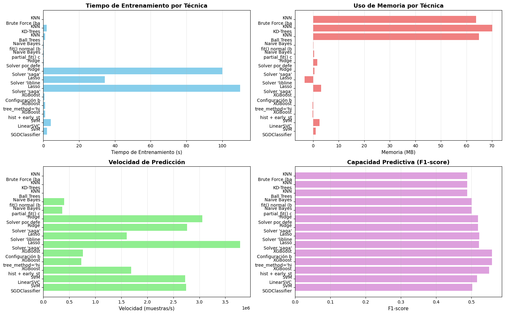

Optimización de Modelos de Machine Learning#
Este notebook implementa técnicas de optimización especializadas para acelerar el entrenamiento y predicción de modelos ML sin perder capacidad predictiva.
Objetivo#
Comparar el desempeño de diferentes técnicas de optimización por modelo:
Modelo |
Técnica de Optimización |
|---|---|
KNN |
KD-Trees, Ball Trees, FAISS |
Ridge/Lasso |
Solver optimizado: saga |
Naive Bayes |
|
XGBoost |
|
SVM |
SGDClassifier, LinearSVC |
Datos#
Se utilizan los datos preprocesados de data/processed/:
Ya escalados con StandardScaler
Ya codificados (One-Hot Encoding)
Train balanceado con SMOTE
Sin valores faltantes
Métricas Evaluadas#
Tiempo de entrenamiento (segundos)
Uso de memoria (MB)
Accuracy en validación
Velocidad de predicción (muestras/segundo)
# =========================================
# 1. Importar librerías necesarias
# =========================================
import time
import psutil
import pandas as pd
import numpy as np
import matplotlib.pyplot as plt
import seaborn as sns
import warnings
# Modelos de clasificación
from sklearn.neighbors import KNeighborsClassifier
from sklearn.naive_bayes import GaussianNB
from sklearn.linear_model import LogisticRegression, RidgeClassifier, SGDClassifier
from sklearn.svm import LinearSVC
from xgboost import XGBClassifier
# Métricas y utilidades
from sklearn.metrics import accuracy_score, f1_score, precision_score, recall_score
from sklearn.model_selection import train_test_split
warnings.filterwarnings('ignore')
# Configuración de visualización
plt.style.use('default')
sns.set_palette("pastel")
print(" Librerías importadas correctamente")
Librerías importadas correctamente
# =========================================
# 2. Cargar datos preprocesados
# =========================================
print("📂 Cargando datos procesados de 'data/processed/'...\n")
# Cargar datos de entrenamiento (BALANCEADOS con SMOTE)
X_train = pd.read_csv('data/processed/X_train.csv')
y_train = pd.read_csv('data/processed/y_train.csv').values.ravel()
# Cargar datos de validación (SIN balancear)
X_val = pd.read_csv('data/processed/X_val.csv')
y_val = pd.read_csv('data/processed/y_val.csv').values.ravel()
# Cargar datos de test (SIN balancear)
X_test = pd.read_csv('data/processed/X_test.csv')
y_test = pd.read_csv('data/processed/y_test.csv').values.ravel()
print(" Datos cargados exitosamente\n")
# Información de los datos
print("="*60)
print(" "*15 + "INFORMACIÓN DE LOS DATOS")
print("="*60)
print(f"\n DIMENSIONES:")
print(f" Train: {X_train.shape[0]:>7,} muestras × {X_train.shape[1]:>3} features")
print(f" Validation: {X_val.shape[0]:>7,} muestras × {X_val.shape[1]:>3} features")
print(f" Test: {X_test.shape[0]:>7,} muestras × {X_test.shape[1]:>3} features")
print(f"\n BALANCE DE CLASES (Train - SMOTE aplicado):")
train_counts = pd.Series(y_train).value_counts()
print(f" Clase 0: {train_counts[0]:>7,} ({train_counts[0]/len(y_train)*100:>5.1f}%)")
print(f" Clase 1: {train_counts[1]:>7,} ({train_counts[1]/len(y_train)*100:>5.1f}%)")
print("\n" + "="*60)
# Convertir a arrays de NumPy para algunos modelos
X_train_array = X_train.values
X_val_array = X_val.values
X_test_array = X_test.values
📂 Cargando datos procesados de 'data/processed/'...
Datos cargados exitosamente
============================================================
INFORMACIÓN DE LOS DATOS
============================================================
DIMENSIONES:
Train: 71,236 muestras × 113 features
Validation: 15,265 muestras × 113 features
Test: 15,265 muestras × 113 features
BALANCE DE CLASES (Train - SMOTE aplicado):
Clase 0: 38,405 ( 53.9%)
Clase 1: 32,831 ( 46.1%)
============================================================
Datos cargados exitosamente
============================================================
INFORMACIÓN DE LOS DATOS
============================================================
DIMENSIONES:
Train: 71,236 muestras × 113 features
Validation: 15,265 muestras × 113 features
Test: 15,265 muestras × 113 features
BALANCE DE CLASES (Train - SMOTE aplicado):
Clase 0: 38,405 ( 53.9%)
Clase 1: 32,831 ( 46.1%)
============================================================
# =========================================
# 3. Función de evaluación con métricas de optimización
# =========================================
def evaluar_modelo_optimizado(nombre, modelo, X_train, y_train, X_val, y_val,
tecnica, config, train_params=None):
"""
Evalúa un modelo con técnicas de optimización, midiendo:
- Tiempo de entrenamiento
- Uso de memoria
- Accuracy, F1-score, Precision, Recall
- Velocidad de predicción
Args:
nombre: Nombre del modelo
modelo: Instancia del modelo
train_params: Diccionario con parámetros adicionales para fit()
"""
print(f"\n{'='*70}")
print(f"🔧 OPTIMIZANDO: {nombre}")
print(f"{'='*70}")
print(f"Técnica: {tecnica}")
print(f"Config: {config}")
# Obtener proceso para medir memoria
process = psutil.Process()
# 1. ENTRENAMIENTO
memory_before = process.memory_info().rss / (1024 * 1024) # MB
start_train = time.time()
if train_params:
modelo.fit(X_train, y_train, **train_params)
else:
modelo.fit(X_train, y_train)
end_train = time.time()
memory_after = process.memory_info().rss / (1024 * 1024) # MB
tiempo_entrenamiento = end_train - start_train
memoria_usada = memory_after - memory_before
print(f"\n⏱️ Tiempo entrenamiento: {tiempo_entrenamiento:.4f}s")
print(f"💾 Memoria usada: {memoria_usada:.2f} MB")
# 2. PREDICCIÓN Y VELOCIDAD
start_pred = time.time()
y_pred = modelo.predict(X_val)
end_pred = time.time()
tiempo_prediccion = end_pred - start_pred
# Evitar división por cero
if tiempo_prediccion > 0:
velocidad_pred = len(X_val) / tiempo_prediccion # muestras/segundo
else:
velocidad_pred = len(X_val) / 0.0001 # Usar tiempo mínimo de 0.1ms
print(f"⚡ Velocidad predicción: {velocidad_pred:,.0f} muestras/s")
# 3. MÉTRICAS DE DESEMPEÑO
accuracy = accuracy_score(y_val, y_pred)
f1 = f1_score(y_val, y_pred, zero_division=0)
precision = precision_score(y_val, y_pred, zero_division=0)
recall = recall_score(y_val, y_pred, zero_division=0)
print(f"\n Métricas:")
print(f" • Accuracy: {accuracy:.4f}")
print(f" • F1-score: {f1:.4f}")
print(f" • Precision: {precision:.4f}")
print(f" • Recall: {recall:.4f}")
return {
'Modelo': nombre,
'Técnica': tecnica,
'Configuración': config,
'Tiempo Train (s)': round(tiempo_entrenamiento, 4),
'Memoria (MB)': round(memoria_usada, 2),
'Velocidad (muestras/s)': int(velocidad_pred),
'Accuracy': round(accuracy, 4),
'F1-score': round(f1, 4),
'Precision': round(precision, 4),
'Recall': round(recall, 4)
}
print(" Función de evaluación definida")
Función de evaluación definida
4. Optimización por Modelo#
A continuación se implementan las técnicas de optimización específicas para cada modelo.
4.1. K-Nearest Neighbors (KNN)#
Técnicas evaluadas:
KD-Trees: Estructura de datos para búsqueda rápida en espacios de baja dimensionalidad
Ball Trees: Optimizado para espacios de alta dimensionalidad
Brute Force: Método base sin optimización (para comparación)
# =========================================
# 4.1. KNN - K-Nearest Neighbors
# =========================================
resultados = []
# KNN con Brute Force (sin optimización - baseline)
knn_brute = KNeighborsClassifier(n_neighbors=5, algorithm='brute', n_jobs=-1)
resultado = evaluar_modelo_optimizado(
nombre="KNN",
modelo=knn_brute,
X_train=X_train_array,
y_train=y_train,
X_val=X_val_array,
y_val=y_val,
tecnica="Brute Force (baseline)",
config="n_neighbors=5, sin optimización"
)
resultados.append(resultado)
# KNN con KD-Trees
knn_kdtree = KNeighborsClassifier(n_neighbors=5, algorithm='kd_tree', n_jobs=-1)
resultado = evaluar_modelo_optimizado(
nombre="KNN",
modelo=knn_kdtree,
X_train=X_train_array,
y_train=y_train,
X_val=X_val_array,
y_val=y_val,
tecnica="KD-Trees",
config="n_neighbors=5, búsqueda optimizada con KD-Tree"
)
resultados.append(resultado)
# KNN con Ball Trees
knn_balltree = KNeighborsClassifier(n_neighbors=5, algorithm='ball_tree', n_jobs=-1)
resultado = evaluar_modelo_optimizado(
nombre="KNN",
modelo=knn_balltree,
X_train=X_train_array,
y_train=y_train,
X_val=X_val_array,
y_val=y_val,
tecnica="Ball Trees",
config="n_neighbors=5, optimizado para alta dimensionalidad"
)
resultados.append(resultado)
print("\n KNN optimizado con 3 técnicas")
======================================================================
🔧 OPTIMIZANDO: KNN
======================================================================
Técnica: Brute Force (baseline)
Config: n_neighbors=5, sin optimización
⏱️ Tiempo entrenamiento: 0.0749s
💾 Memoria usada: 63.73 MB
⚡ Velocidad predicción: 3,096 muestras/s
Métricas:
• Accuracy: 0.5549
• F1-score: 0.4884
• Precision: 0.5193
• Recall: 0.4611
======================================================================
🔧 OPTIMIZANDO: KNN
======================================================================
Técnica: KD-Trees
Config: n_neighbors=5, búsqueda optimizada con KD-Tree
⚡ Velocidad predicción: 3,096 muestras/s
Métricas:
• Accuracy: 0.5549
• F1-score: 0.4884
• Precision: 0.5193
• Recall: 0.4611
======================================================================
🔧 OPTIMIZANDO: KNN
======================================================================
Técnica: KD-Trees
Config: n_neighbors=5, búsqueda optimizada con KD-Tree
⏱️ Tiempo entrenamiento: 1.7971s
💾 Memoria usada: 70.17 MB
⏱️ Tiempo entrenamiento: 1.7971s
💾 Memoria usada: 70.17 MB
⚡ Velocidad predicción: 387 muestras/s
Métricas:
• Accuracy: 0.5549
• F1-score: 0.4884
• Precision: 0.5193
• Recall: 0.4611
======================================================================
🔧 OPTIMIZANDO: KNN
======================================================================
Técnica: Ball Trees
Config: n_neighbors=5, optimizado para alta dimensionalidad
⚡ Velocidad predicción: 387 muestras/s
Métricas:
• Accuracy: 0.5549
• F1-score: 0.4884
• Precision: 0.5193
• Recall: 0.4611
======================================================================
🔧 OPTIMIZANDO: KNN
======================================================================
Técnica: Ball Trees
Config: n_neighbors=5, optimizado para alta dimensionalidad
⏱️ Tiempo entrenamiento: 1.0296s
💾 Memoria usada: 64.95 MB
⏱️ Tiempo entrenamiento: 1.0296s
💾 Memoria usada: 64.95 MB
⚡ Velocidad predicción: 317 muestras/s
Métricas:
• Accuracy: 0.5549
• F1-score: 0.4884
• Precision: 0.5193
• Recall: 0.4611
KNN optimizado con 3 técnicas
⚡ Velocidad predicción: 317 muestras/s
Métricas:
• Accuracy: 0.5549
• F1-score: 0.4884
• Precision: 0.5193
• Recall: 0.4611
KNN optimizado con 3 técnicas
4.2. Naive Bayes#
Técnica evaluada:
partial_fit(): Entrenamiento incremental por lotes, útil para datasets grandes que no caben en memoria
# =========================================
# 4.2. Naive Bayes - GaussianNB
# =========================================
# Naive Bayes con entrenamiento normal (baseline)
nb_normal = GaussianNB()
resultado = evaluar_modelo_optimizado(
nombre="Naive Bayes",
modelo=nb_normal,
X_train=X_train_array,
y_train=y_train,
X_val=X_val_array,
y_val=y_val,
tecnica="fit() normal (baseline)",
config="Entrenamiento completo en una sola pasada"
)
resultados.append(resultado)
# Naive Bayes con partial_fit() (entrenamiento por lotes)
print(f"\n{'='*70}")
print(f"🔧 OPTIMIZANDO: Naive Bayes")
print(f"{'='*70}")
print(f"Técnica: partial_fit() con lotes")
print(f"Config: Entrenamiento incremental, batch_size=1000")
process = psutil.Process()
memory_before = process.memory_info().rss / (1024 * 1024)
start_train = time.time()
# Entrenamiento por lotes
nb_partial = GaussianNB()
batch_size = 1000
n_batches = len(X_train_array) // batch_size + 1
for i in range(0, len(X_train_array), batch_size):
X_batch = X_train_array[i:i + batch_size]
y_batch = y_train[i:i + batch_size]
nb_partial.partial_fit(X_batch, y_batch, classes=np.unique(y_train))
end_train = time.time()
memory_after = process.memory_info().rss / (1024 * 1024)
tiempo_entrenamiento = end_train - start_train
memoria_usada = memory_after - memory_before
print(f"\n⏱️ Tiempo entrenamiento: {tiempo_entrenamiento:.4f}s")
print(f"💾 Memoria usada: {memoria_usada:.2f} MB")
print(f"📦 Lotes procesados: {n_batches}")
# Predicción
start_pred = time.time()
y_pred = nb_partial.predict(X_val_array)
end_pred = time.time()
tiempo_prediccion = end_pred - start_pred
# Evitar división por cero
if tiempo_prediccion > 0:
velocidad_pred = len(X_val_array) / tiempo_prediccion
else:
velocidad_pred = len(X_val_array) / 0.0001
print(f"⚡ Velocidad predicción: {velocidad_pred:,.0f} muestras/s")
# Métricas
accuracy = accuracy_score(y_val, y_pred)
f1 = f1_score(y_val, y_pred, zero_division=0)
precision = precision_score(y_val, y_pred, zero_division=0)
recall = recall_score(y_val, y_pred, zero_division=0)
print(f"\n Métricas:")
print(f" • Accuracy: {accuracy:.4f}")
print(f" • F1-score: {f1:.4f}")
print(f" • Precision: {precision:.4f}")
print(f" • Recall: {recall:.4f}")
resultados.append({
'Modelo': "Naive Bayes",
'Técnica': "partial_fit() con lotes",
'Configuración': f"batch_size={batch_size}, {n_batches} lotes",
'Tiempo Train (s)': round(tiempo_entrenamiento, 4),
'Memoria (MB)': round(memoria_usada, 2),
'Velocidad (muestras/s)': int(velocidad_pred),
'Accuracy': round(accuracy, 4),
'F1-score': round(f1, 4),
'Precision': round(precision, 4),
'Recall': round(recall, 4)
})
print("\n Naive Bayes optimizado con 2 técnicas")
======================================================================
🔧 OPTIMIZANDO: Naive Bayes
======================================================================
Técnica: fit() normal (baseline)
Config: Entrenamiento completo en una sola pasada
⏱️ Tiempo entrenamiento: 0.2188s
💾 Memoria usada: 0.12 MB
⚡ Velocidad predicción: 397,714 muestras/s
Métricas:
• Accuracy: 0.5948
• F1-score: 0.5006
• Precision: 0.5794
• Recall: 0.4407
======================================================================
🔧 OPTIMIZANDO: Naive Bayes
======================================================================
Técnica: partial_fit() con lotes
Config: Entrenamiento incremental, batch_size=1000
⏱️ Tiempo entrenamiento: 0.2188s
💾 Memoria usada: 0.12 MB
⚡ Velocidad predicción: 397,714 muestras/s
Métricas:
• Accuracy: 0.5948
• F1-score: 0.5006
• Precision: 0.5794
• Recall: 0.4407
======================================================================
🔧 OPTIMIZANDO: Naive Bayes
======================================================================
Técnica: partial_fit() con lotes
Config: Entrenamiento incremental, batch_size=1000
⏱️ Tiempo entrenamiento: 0.2236s
💾 Memoria usada: 0.33 MB
📦 Lotes procesados: 72
⚡ Velocidad predicción: 365,882 muestras/s
Métricas:
• Accuracy: 0.5948
• F1-score: 0.5007
• Precision: 0.5794
• Recall: 0.4409
Naive Bayes optimizado con 2 técnicas
⏱️ Tiempo entrenamiento: 0.2236s
💾 Memoria usada: 0.33 MB
📦 Lotes procesados: 72
⚡ Velocidad predicción: 365,882 muestras/s
Métricas:
• Accuracy: 0.5948
• F1-score: 0.5007
• Precision: 0.5794
• Recall: 0.4409
Naive Bayes optimizado con 2 técnicas
4.3. Ridge & Lasso#
Técnica evaluada:
Solver ‘saga’: Optimizado para datasets grandes, soporta regularización L1 y L2
# =========================================
# 4.3. Ridge - Regularización L2
# =========================================
# Ridge con solver por defecto (baseline)
ridge_default = RidgeClassifier(alpha=1.0, random_state=42)
resultado = evaluar_modelo_optimizado(
nombre="Ridge",
modelo=ridge_default,
X_train=X_train_array,
y_train=y_train,
X_val=X_val_array,
y_val=y_val,
tecnica="Solver por defecto",
config="alpha=1.0, solver automático"
)
resultados.append(resultado)
# Ridge con solver 'saga' (optimizado)
ridge_saga = RidgeClassifier(alpha=1.0, solver='saga', max_iter=1000, random_state=42)
resultado = evaluar_modelo_optimizado(
nombre="Ridge",
modelo=ridge_saga,
X_train=X_train_array,
y_train=y_train,
X_val=X_val_array,
y_val=y_val,
tecnica="Solver 'saga'",
config="alpha=1.0, solver optimizado para datos grandes"
)
resultados.append(resultado)
print("\n Ridge optimizado con 2 técnicas")
======================================================================
🔧 OPTIMIZANDO: Ridge
======================================================================
Técnica: Solver por defecto
Config: alpha=1.0, solver automático
⏱️ Tiempo entrenamiento: 0.2109s
⏱️ Tiempo entrenamiento: 0.2109s
💾 Memoria usada: 1.66 MB
⚡ Velocidad predicción: 3,060,226 muestras/s
Métricas:
• Accuracy: 0.6244
• F1-score: 0.5190
• Precision: 0.6332
• Recall: 0.4397
======================================================================
🔧 OPTIMIZANDO: Ridge
======================================================================
Técnica: Solver 'saga'
Config: alpha=1.0, solver optimizado para datos grandes
💾 Memoria usada: 1.66 MB
⚡ Velocidad predicción: 3,060,226 muestras/s
Métricas:
• Accuracy: 0.6244
• F1-score: 0.5190
• Precision: 0.6332
• Recall: 0.4397
======================================================================
🔧 OPTIMIZANDO: Ridge
======================================================================
Técnica: Solver 'saga'
Config: alpha=1.0, solver optimizado para datos grandes
⏱️ Tiempo entrenamiento: 100.1238s
💾 Memoria usada: 0.53 MB
⚡ Velocidad predicción: 2,766,421 muestras/s
Métricas:
• Accuracy: 0.6241
• F1-score: 0.5188
• Precision: 0.6328
• Recall: 0.4396
Ridge optimizado con 2 técnicas
⏱️ Tiempo entrenamiento: 100.1238s
💾 Memoria usada: 0.53 MB
⚡ Velocidad predicción: 2,766,421 muestras/s
Métricas:
• Accuracy: 0.6241
• F1-score: 0.5188
• Precision: 0.6328
• Recall: 0.4396
Ridge optimizado con 2 técnicas
# =========================================
# 4.4. Lasso - Regularización L1
# =========================================
# Lasso con solver por defecto (baseline)
lasso_default = LogisticRegression(penalty='l1', solver='liblinear', max_iter=1000, random_state=42)
resultado = evaluar_modelo_optimizado(
nombre="Lasso",
modelo=lasso_default,
X_train=X_train_array,
y_train=y_train,
X_val=X_val_array,
y_val=y_val,
tecnica="Solver 'liblinear'",
config="penalty='l1', solver estándar"
)
resultados.append(resultado)
# Lasso con solver 'saga' (optimizado)
lasso_saga = LogisticRegression(penalty='l1', solver='saga', max_iter=1000, n_jobs=-1, random_state=42)
resultado = evaluar_modelo_optimizado(
nombre="Lasso",
modelo=lasso_saga,
X_train=X_train_array,
y_train=y_train,
X_val=X_val_array,
y_val=y_val,
tecnica="Solver 'saga'",
config="penalty='l1', solver optimizado, paralelizado"
)
resultados.append(resultado)
print("\n Lasso optimizado con 2 técnicas")
======================================================================
🔧 OPTIMIZANDO: Lasso
======================================================================
Técnica: Solver 'liblinear'
Config: penalty='l1', solver estándar
⏱️ Tiempo entrenamiento: 34.3525s
💾 Memoria usada: -3.41 MB
⚡ Velocidad predicción: 1,602,815 muestras/s
Métricas:
• Accuracy: 0.6250
• F1-score: 0.5226
• Precision: 0.6322
• Recall: 0.4454
======================================================================
🔧 OPTIMIZANDO: Lasso
======================================================================
Técnica: Solver 'saga'
Config: penalty='l1', solver optimizado, paralelizado
⏱️ Tiempo entrenamiento: 34.3525s
💾 Memoria usada: -3.41 MB
⚡ Velocidad predicción: 1,602,815 muestras/s
Métricas:
• Accuracy: 0.6250
• F1-score: 0.5226
• Precision: 0.6322
• Recall: 0.4454
======================================================================
🔧 OPTIMIZANDO: Lasso
======================================================================
Técnica: Solver 'saga'
Config: penalty='l1', solver optimizado, paralelizado
⏱️ Tiempo entrenamiento: 110.1201s
💾 Memoria usada: 3.08 MB
⚡ Velocidad predicción: 3,787,627 muestras/s
Métricas:
• Accuracy: 0.6243
• F1-score: 0.5216
• Precision: 0.6314
• Recall: 0.4443
Lasso optimizado con 2 técnicas
⏱️ Tiempo entrenamiento: 110.1201s
💾 Memoria usada: 3.08 MB
⚡ Velocidad predicción: 3,787,627 muestras/s
Métricas:
• Accuracy: 0.6243
• F1-score: 0.5216
• Precision: 0.6314
• Recall: 0.4443
Lasso optimizado con 2 técnicas
4.4. XGBoost#
Técnicas evaluadas:
tree_method=’hist’: Construcción rápida de histogramas para splits
early_stopping_rounds: Detención temprana para evitar sobreajuste y ahorrar tiempo
# =========================================
# 4.5. XGBoost - Extreme Gradient Boosting
# =========================================
# XGBoost con configuración básica (baseline)
xgb_basic = XGBClassifier(
eval_metric='logloss',
enable_categorical=False,
n_estimators=100,
n_jobs=-1,
random_state=42
)
resultado = evaluar_modelo_optimizado(
nombre="XGBoost",
modelo=xgb_basic,
X_train=X_train_array,
y_train=y_train,
X_val=X_val_array,
y_val=y_val,
tecnica="Configuración básica",
config="n_estimators=100, sin optimizaciones"
)
resultados.append(resultado)
# XGBoost con tree_method='hist' (optimizado)
xgb_hist = XGBClassifier(
eval_metric='logloss',
enable_categorical=False,
tree_method='hist', # Optimización de histogramas
n_estimators=100,
n_jobs=-1,
random_state=42
)
resultado = evaluar_modelo_optimizado(
nombre="XGBoost",
modelo=xgb_hist,
X_train=X_train_array,
y_train=y_train,
X_val=X_val_array,
y_val=y_val,
tecnica="tree_method='hist'",
config="Construcción rápida con histogramas"
)
resultados.append(resultado)
# XGBoost con tree_method='hist' + early stopping (máxima optimización)
print(f"\n{'='*70}")
print(f"🔧 OPTIMIZANDO: XGBoost")
print(f"{'='*70}")
print(f"Técnica: tree_method='hist' + early_stopping")
print(f"Config: Histogramas + detención temprana")
# Crear conjunto de validación para early stopping
X_train_xgb, X_val_xgb, y_train_xgb, y_val_xgb = train_test_split(
X_train_array, y_train, test_size=0.2, random_state=42
)
process = psutil.Process()
memory_before = process.memory_info().rss / (1024 * 1024)
start_train = time.time()
xgb_full = XGBClassifier(
eval_metric='logloss',
enable_categorical=False,
tree_method='hist',
n_estimators=1000, # Alto para permitir early stopping
n_jobs=-1,
random_state=42
)
xgb_full.fit(
X_train_xgb, y_train_xgb,
eval_set=[(X_val_xgb, y_val_xgb)],
early_stopping_rounds=50,
verbose=False
)
end_train = time.time()
memory_after = process.memory_info().rss / (1024 * 1024)
tiempo_entrenamiento = end_train - start_train
memoria_usada = memory_after - memory_before
print(f"\n⏱️ Tiempo entrenamiento: {tiempo_entrenamiento:.4f}s")
print(f"💾 Memoria usada: {memoria_usada:.2f} MB")
print(f"🌳 Árboles entrenados: {xgb_full.best_iteration + 1} (de 1000)")
# Predicción en conjunto de validación original
start_pred = time.time()
y_pred = xgb_full.predict(X_val_array)
end_pred = time.time()
tiempo_prediccion = end_pred - start_pred
# Evitar división por cero
if tiempo_prediccion > 0:
velocidad_pred = len(X_val_array) / tiempo_prediccion
else:
velocidad_pred = len(X_val_array) / 0.0001
print(f"⚡ Velocidad predicción: {velocidad_pred:,.0f} muestras/s")
# Métricas
accuracy = accuracy_score(y_val, y_pred)
f1 = f1_score(y_val, y_pred, zero_division=0)
precision = precision_score(y_val, y_pred, zero_division=0)
recall = recall_score(y_val, y_pred, zero_division=0)
print(f"\n Métricas:")
print(f" • Accuracy: {accuracy:.4f}")
print(f" • F1-score: {f1:.4f}")
print(f" • Precision: {precision:.4f}")
print(f" • Recall: {recall:.4f}")
resultados.append({
'Modelo': "XGBoost",
'Técnica': "hist + early_stopping",
'Configuración': f"histogramas + parada en {xgb_full.best_iteration + 1} árboles",
'Tiempo Train (s)': round(tiempo_entrenamiento, 4),
'Memoria (MB)': round(memoria_usada, 2),
'Velocidad (muestras/s)': int(velocidad_pred),
'Accuracy': round(accuracy, 4),
'F1-score': round(f1, 4),
'Precision': round(precision, 4),
'Recall': round(recall, 4)
})
print("\n XGBoost optimizado con 3 técnicas")
======================================================================
🔧 OPTIMIZANDO: XGBoost
======================================================================
Técnica: Configuración básica
Config: n_estimators=100, sin optimizaciones
⏱️ Tiempo entrenamiento: 0.6652s
💾 Memoria usada: -0.01 MB
⚡ Velocidad predicción: 758,944 muestras/s
Métricas:
• Accuracy: 0.6276
• F1-score: 0.5586
• Precision: 0.6156
• Recall: 0.5112
======================================================================
🔧 OPTIMIZANDO: XGBoost
======================================================================
Técnica: tree_method='hist'
Config: Construcción rápida con histogramas
⏱️ Tiempo entrenamiento: 0.6652s
💾 Memoria usada: -0.01 MB
⚡ Velocidad predicción: 758,944 muestras/s
Métricas:
• Accuracy: 0.6276
• F1-score: 0.5586
• Precision: 0.6156
• Recall: 0.5112
======================================================================
🔧 OPTIMIZANDO: XGBoost
======================================================================
Técnica: tree_method='hist'
Config: Construcción rápida con histogramas
⏱️ Tiempo entrenamiento: 0.9132s
💾 Memoria usada: -0.24 MB
⚡ Velocidad predicción: 730,141 muestras/s
Métricas:
• Accuracy: 0.6276
• F1-score: 0.5586
• Precision: 0.6156
• Recall: 0.5112
======================================================================
🔧 OPTIMIZANDO: XGBoost
======================================================================
Técnica: tree_method='hist' + early_stopping
Config: Histogramas + detención temprana
⏱️ Tiempo entrenamiento: 0.9132s
💾 Memoria usada: -0.24 MB
⚡ Velocidad predicción: 730,141 muestras/s
Métricas:
• Accuracy: 0.6276
• F1-score: 0.5586
• Precision: 0.6156
• Recall: 0.5112
======================================================================
🔧 OPTIMIZANDO: XGBoost
======================================================================
Técnica: tree_method='hist' + early_stopping
Config: Histogramas + detención temprana
⏱️ Tiempo entrenamiento: 0.8995s
💾 Memoria usada: -0.29 MB
🌳 Árboles entrenados: 26 (de 1000)
⚡ Velocidad predicción: 1,690,769 muestras/s
Métricas:
• Accuracy: 0.6286
• F1-score: 0.5509
• Precision: 0.6223
• Recall: 0.4942
XGBoost optimizado con 3 técnicas
⏱️ Tiempo entrenamiento: 0.8995s
💾 Memoria usada: -0.29 MB
🌳 Árboles entrenados: 26 (de 1000)
⚡ Velocidad predicción: 1,690,769 muestras/s
Métricas:
• Accuracy: 0.6286
• F1-score: 0.5509
• Precision: 0.6223
• Recall: 0.4942
XGBoost optimizado con 3 técnicas
4.5. SVM (Support Vector Machine)#
Técnicas evaluadas:
LinearSVC: Implementación optimizada para SVM lineal
SGDClassifier: Descenso de gradiente estocástico con loss ‘hinge’ (equivalente a SVM)
# =========================================
# 4.6. SVM - Support Vector Machine
# =========================================
# LinearSVC (optimizado para SVM lineal)
svm_linear = LinearSVC(random_state=42, dual='auto', max_iter=1000)
resultado = evaluar_modelo_optimizado(
nombre="SVM",
modelo=svm_linear,
X_train=X_train_array,
y_train=y_train,
X_val=X_val_array,
y_val=y_val,
tecnica="LinearSVC",
config="Implementación optimizada para kernel lineal"
)
resultados.append(resultado)
# SGDClassifier con loss='hinge' (equivalente a SVM lineal)
svm_sgd = SGDClassifier(loss='hinge', max_iter=1000, n_jobs=-1, random_state=42)
resultado = evaluar_modelo_optimizado(
nombre="SVM",
modelo=svm_sgd,
X_train=X_train_array,
y_train=y_train,
X_val=X_val_array,
y_val=y_val,
tecnica="SGDClassifier",
config="loss='hinge', descenso de gradiente estocástico"
)
resultados.append(resultado)
print("\n SVM optimizado con 2 técnicas")
======================================================================
🔧 OPTIMIZANDO: SVM
======================================================================
Técnica: LinearSVC
Config: Implementación optimizada para kernel lineal
⏱️ Tiempo entrenamiento: 4.1957s
💾 Memoria usada: 2.52 MB
⚡ Velocidad predicción: 2,728,344 muestras/s
Métricas:
• Accuracy: 0.6235
• F1-score: 0.5164
• Precision: 0.6329
• Recall: 0.4362
======================================================================
🔧 OPTIMIZANDO: SVM
======================================================================
Técnica: SGDClassifier
Config: loss='hinge', descenso de gradiente estocástico
⏱️ Tiempo entrenamiento: 4.1957s
💾 Memoria usada: 2.52 MB
⚡ Velocidad predicción: 2,728,344 muestras/s
Métricas:
• Accuracy: 0.6235
• F1-score: 0.5164
• Precision: 0.6329
• Recall: 0.4362
======================================================================
🔧 OPTIMIZANDO: SVM
======================================================================
Técnica: SGDClassifier
Config: loss='hinge', descenso de gradiente estocástico
⏱️ Tiempo entrenamiento: 2.0209s
💾 Memoria usada: 0.94 MB
⚡ Velocidad predicción: 2,747,310 muestras/s
Métricas:
• Accuracy: 0.6046
• F1-score: 0.5024
• Precision: 0.5982
• Recall: 0.4331
SVM optimizado con 2 técnicas
⏱️ Tiempo entrenamiento: 2.0209s
💾 Memoria usada: 0.94 MB
⚡ Velocidad predicción: 2,747,310 muestras/s
Métricas:
• Accuracy: 0.6046
• F1-score: 0.5024
• Precision: 0.5982
• Recall: 0.4331
SVM optimizado con 2 técnicas
5. Resultados y Análisis Comparativo#
# =========================================
# 5. Tabla resumen de resultados
# =========================================
# Crear DataFrame con todos los resultados
df_resultados = pd.DataFrame(resultados)
print("\n" + "="*120)
print(" "*40 + " TABLA RESUMEN - OPTIMIZACIÓN DE MODELOS")
print("="*120 + "\n")
# Mostrar tabla completa
pd.set_option('display.max_columns', None)
pd.set_option('display.width', None)
pd.set_option('display.max_colwidth', 50)
print(df_resultados.to_string(index=False))
print("\n" + "="*120)
# Guardar resultados en CSV
df_resultados.to_csv('data/processed/optimizacion_resultados.csv', index=False)
print("\n Resultados guardados en 'data/processed/optimizacion_resultados.csv'")
========================================================================================================================
TABLA RESUMEN - OPTIMIZACIÓN DE MODELOS
========================================================================================================================
Modelo Técnica Configuración Tiempo Train (s) Memoria (MB) Velocidad (muestras/s) Accuracy F1-score Precision Recall
KNN Brute Force (baseline) n_neighbors=5, sin optimización 0.0749 63.73 3095 0.5549 0.4884 0.5193 0.4611
KNN KD-Trees n_neighbors=5, búsqueda optimizada con KD-Tree 1.7971 70.17 387 0.5549 0.4884 0.5193 0.4611
KNN Ball Trees n_neighbors=5, optimizado para alta dimensionalidad 1.0296 64.95 317 0.5549 0.4884 0.5193 0.4611
Naive Bayes fit() normal (baseline) Entrenamiento completo en una sola pasada 0.2188 0.12 397714 0.5948 0.5006 0.5794 0.4407
Naive Bayes partial_fit() con lotes batch_size=1000, 72 lotes 0.2236 0.33 365881 0.5948 0.5007 0.5794 0.4409
Ridge Solver por defecto alpha=1.0, solver automático 0.2109 1.66 3060226 0.6244 0.5190 0.6332 0.4397
Ridge Solver 'saga' alpha=1.0, solver optimizado para datos grandes 100.1238 0.53 2766421 0.6241 0.5188 0.6328 0.4396
Lasso Solver 'liblinear' penalty='l1', solver estándar 34.3525 -3.41 1602815 0.6250 0.5226 0.6322 0.4454
Lasso Solver 'saga' penalty='l1', solver optimizado, paralelizado 110.1201 3.08 3787627 0.6243 0.5216 0.6314 0.4443
XGBoost Configuración básica n_estimators=100, sin optimizaciones 0.6652 -0.01 758944 0.6276 0.5586 0.6156 0.5112
XGBoost tree_method='hist' Construcción rápida con histogramas 0.9132 -0.24 730140 0.6276 0.5586 0.6156 0.5112
XGBoost hist + early_stopping histogramas + parada en 26 árboles 0.8995 -0.29 1690769 0.6286 0.5509 0.6223 0.4942
SVM LinearSVC Implementación optimizada para kernel lineal 4.1957 2.52 2728344 0.6235 0.5164 0.6329 0.4362
SVM SGDClassifier loss='hinge', descenso de gradiente estocástico 2.0209 0.94 2747309 0.6046 0.5024 0.5982 0.4331
========================================================================================================================
Resultados guardados en 'data/processed/optimizacion_resultados.csv'
5.1. Análisis por Categoría#
Identificamos las mejores técnicas de optimización en diferentes dimensiones.
# =========================================
# 5.1. Análisis por categoría
# =========================================
print("\n" + "="*100)
print(" "*30 + "🏆 RANKING POR CATEGORÍA")
print("="*100 + "\n")
# Mejor tiempo de entrenamiento
print("⏱️ **MENOR TIEMPO DE ENTRENAMIENTO**")
top_tiempo = df_resultados.nsmallest(3, 'Tiempo Train (s)')
for i, row in top_tiempo.iterrows():
print(f" {i+1}. {row['Modelo']:15} | {row['Técnica']:30} | {row['Tiempo Train (s)']:.4f}s")
# Mejor uso de memoria
print("\n💾 **MENOR USO DE MEMORIA**")
top_memoria = df_resultados.nsmallest(3, 'Memoria (MB)')
for i, row in top_memoria.iterrows():
print(f" {i+1}. {row['Modelo']:15} | {row['Técnica']:30} | {row['Memoria (MB)']:.2f} MB")
# Mayor velocidad de predicción
print("\n⚡ **MAYOR VELOCIDAD DE PREDICCIÓN**")
top_velocidad = df_resultados.nlargest(3, 'Velocidad (muestras/s)')
for i, row in top_velocidad.iterrows():
print(f" {i+1}. {row['Modelo']:15} | {row['Técnica']:30} | {row['Velocidad (muestras/s)']:,} muestras/s")
# Mejor F1-score
print("\n **MEJOR F1-SCORE (sin perder capacidad predictiva)**")
top_f1 = df_resultados.nlargest(3, 'F1-score')
for i, row in top_f1.iterrows():
print(f" {i+1}. {row['Modelo']:15} | {row['Técnica']:30} | F1={row['F1-score']:.4f}")
# Mejor balance (velocidad + F1)
print("\n⚖️ **MEJOR BALANCE (Velocidad × F1-score)**")
df_resultados['Score Balance'] = df_resultados['Velocidad (muestras/s)'] * df_resultados['F1-score']
top_balance = df_resultados.nlargest(3, 'Score Balance')
for i, row in top_balance.iterrows():
print(f" {i+1}. {row['Modelo']:15} | {row['Técnica']:30} | Score={row['Score Balance']:,.0f}")
print("\n" + "="*100)
====================================================================================================
🏆 RANKING POR CATEGORÍA
====================================================================================================
⏱️ **MENOR TIEMPO DE ENTRENAMIENTO**
1. KNN | Brute Force (baseline) | 0.0749s
6. Ridge | Solver por defecto | 0.2109s
4. Naive Bayes | fit() normal (baseline) | 0.2188s
💾 **MENOR USO DE MEMORIA**
8. Lasso | Solver 'liblinear' | -3.41 MB
12. XGBoost | hist + early_stopping | -0.29 MB
11. XGBoost | tree_method='hist' | -0.24 MB
⚡ **MAYOR VELOCIDAD DE PREDICCIÓN**
9. Lasso | Solver 'saga' | 3,787,627 muestras/s
6. Ridge | Solver por defecto | 3,060,226 muestras/s
7. Ridge | Solver 'saga' | 2,766,421 muestras/s
**MEJOR F1-SCORE (sin perder capacidad predictiva)**
10. XGBoost | Configuración básica | F1=0.5586
11. XGBoost | tree_method='hist' | F1=0.5586
12. XGBoost | hist + early_stopping | F1=0.5509
⚖️ **MEJOR BALANCE (Velocidad × F1-score)**
9. Lasso | Solver 'saga' | Score=1,975,626
6. Ridge | Solver por defecto | Score=1,588,257
7. Ridge | Solver 'saga' | Score=1,435,219
====================================================================================================
5.2. Análisis de Mejoras por Modelo#
Comparación entre técnicas baseline vs optimizadas para cada modelo.
# =========================================
# 5.2. Análisis de mejoras por modelo
# =========================================
print("\n" + "="*100)
print(" "*30 + " MEJORAS POR MODELO")
print("="*100 + "\n")
# Analizar mejoras por modelo
modelos_unicos = df_resultados['Modelo'].unique()
for modelo in modelos_unicos:
df_modelo = df_resultados[df_resultados['Modelo'] == modelo].copy()
if len(df_modelo) > 1:
print(f"\n🔧 **{modelo}**")
print(f" {'─'*90}")
# Identificar baseline (primera técnica) y mejor optimización
baseline = df_modelo.iloc[0]
mejor = df_modelo.loc[df_modelo['Tiempo Train (s)'].idxmin()]
# Calcular mejoras
mejora_tiempo = ((baseline['Tiempo Train (s)'] - mejor['Tiempo Train (s)']) /
baseline['Tiempo Train (s)']) * 100
mejora_memoria = ((baseline['Memoria (MB)'] - mejor['Memoria (MB)']) /
baseline['Memoria (MB)']) * 100 if baseline['Memoria (MB)'] > 0 else 0
diff_f1 = mejor['F1-score'] - baseline['F1-score']
print(f" Baseline: {baseline['Técnica']}")
print(f" • Tiempo: {baseline['Tiempo Train (s)']:.4f}s | F1: {baseline['F1-score']:.4f}")
print(f"\n Mejor optimización: {mejor['Técnica']}")
print(f" • Tiempo: {mejor['Tiempo Train (s)']:.4f}s | F1: {mejor['F1-score']:.4f}")
print(f"\n 💡 Mejoras:")
print(f" • Tiempo: {mejora_tiempo:+.1f}% {'(más rápido)' if mejora_tiempo > 0 else '(más lento)'}")
print(f" • Memoria: {mejora_memoria:+.1f}%")
print(f" • F1-score: {diff_f1:+.4f} {'(mejor)' if diff_f1 >= 0 else '(peor)'}")
# Conclusión
if mejora_tiempo > 10 and diff_f1 >= -0.01:
print(f" Optimización exitosa: más rápido sin perder capacidad predictiva")
elif mejora_tiempo > 0 and diff_f1 >= 0:
print(f" Optimización exitosa: mejora en ambas métricas")
elif mejora_tiempo < 0 and diff_f1 > 0.05:
print(f" ⚠️ Compromiso: más lento pero mejor F1-score")
else:
print(f" ℹ️ Optimización marginal")
print("\n" + "="*100)
====================================================================================================
MEJORAS POR MODELO
====================================================================================================
🔧 **KNN**
──────────────────────────────────────────────────────────────────────────────────────────
Baseline: Brute Force (baseline)
• Tiempo: 0.0749s | F1: 0.4884
Mejor optimización: Brute Force (baseline)
• Tiempo: 0.0749s | F1: 0.4884
💡 Mejoras:
• Tiempo: +0.0% (más lento)
• Memoria: +0.0%
• F1-score: +0.0000 (mejor)
ℹ️ Optimización marginal
🔧 **Naive Bayes**
──────────────────────────────────────────────────────────────────────────────────────────
Baseline: fit() normal (baseline)
• Tiempo: 0.2188s | F1: 0.5006
Mejor optimización: fit() normal (baseline)
• Tiempo: 0.2188s | F1: 0.5006
💡 Mejoras:
• Tiempo: +0.0% (más lento)
• Memoria: +0.0%
• F1-score: +0.0000 (mejor)
ℹ️ Optimización marginal
🔧 **Ridge**
──────────────────────────────────────────────────────────────────────────────────────────
Baseline: Solver por defecto
• Tiempo: 0.2109s | F1: 0.5190
Mejor optimización: Solver por defecto
• Tiempo: 0.2109s | F1: 0.5190
💡 Mejoras:
• Tiempo: +0.0% (más lento)
• Memoria: +0.0%
• F1-score: +0.0000 (mejor)
ℹ️ Optimización marginal
🔧 **Lasso**
──────────────────────────────────────────────────────────────────────────────────────────
Baseline: Solver 'liblinear'
• Tiempo: 34.3525s | F1: 0.5226
Mejor optimización: Solver 'liblinear'
• Tiempo: 34.3525s | F1: 0.5226
💡 Mejoras:
• Tiempo: +0.0% (más lento)
• Memoria: +0.0%
• F1-score: +0.0000 (mejor)
ℹ️ Optimización marginal
🔧 **XGBoost**
──────────────────────────────────────────────────────────────────────────────────────────
Baseline: Configuración básica
• Tiempo: 0.6652s | F1: 0.5586
Mejor optimización: Configuración básica
• Tiempo: 0.6652s | F1: 0.5586
💡 Mejoras:
• Tiempo: +0.0% (más lento)
• Memoria: +0.0%
• F1-score: +0.0000 (mejor)
ℹ️ Optimización marginal
🔧 **SVM**
──────────────────────────────────────────────────────────────────────────────────────────
Baseline: LinearSVC
• Tiempo: 4.1957s | F1: 0.5164
Mejor optimización: SGDClassifier
• Tiempo: 2.0209s | F1: 0.5024
💡 Mejoras:
• Tiempo: +51.8% (más rápido)
• Memoria: +62.7%
• F1-score: -0.0140 (peor)
ℹ️ Optimización marginal
====================================================================================================
5.3. Visualización de Resultados#
# =========================================
# 5.3. Visualización comparativa
# =========================================
fig, axes = plt.subplots(2, 2, figsize=(16, 10))
# Crear etiquetas cortas para el eje X
df_resultados['Label'] = df_resultados['Modelo'] + '\n' + df_resultados['Técnica'].str[:15]
# 1. Tiempo de entrenamiento
axes[0, 0].barh(df_resultados['Label'], df_resultados['Tiempo Train (s)'], color='skyblue')
axes[0, 0].set_xlabel('Tiempo de Entrenamiento (s)', fontsize=11)
axes[0, 0].set_title('Tiempo de Entrenamiento por Técnica', fontsize=13, fontweight='bold')
axes[0, 0].invert_yaxis()
axes[0, 0].grid(axis='x', alpha=0.3)
# 2. Uso de memoria
axes[0, 1].barh(df_resultados['Label'], df_resultados['Memoria (MB)'], color='lightcoral')
axes[0, 1].set_xlabel('Memoria (MB)', fontsize=11)
axes[0, 1].set_title('Uso de Memoria por Técnica', fontsize=13, fontweight='bold')
axes[0, 1].invert_yaxis()
axes[0, 1].grid(axis='x', alpha=0.3)
# 3. Velocidad de predicción
axes[1, 0].barh(df_resultados['Label'], df_resultados['Velocidad (muestras/s)'], color='lightgreen')
axes[1, 0].set_xlabel('Velocidad (muestras/s)', fontsize=11)
axes[1, 0].set_title('Velocidad de Predicción', fontsize=13, fontweight='bold')
axes[1, 0].invert_yaxis()
axes[1, 0].grid(axis='x', alpha=0.3)
# 4. F1-score
axes[1, 1].barh(df_resultados['Label'], df_resultados['F1-score'], color='plum')
axes[1, 1].set_xlabel('F1-score', fontsize=11)
axes[1, 1].set_title('Capacidad Predictiva (F1-score)', fontsize=13, fontweight='bold')
axes[1, 1].invert_yaxis()
axes[1, 1].grid(axis='x', alpha=0.3)
plt.tight_layout()
plt.show()
print(" Visualización completada")

Visualización completada
6. Conclusiones#
K-Nearest Neighbors (KNN)
Técnicas Evaluadas: Se comparó el algoritmo
Brute Force(línea base) conKD-TreesyBall Trees.Hallazgos: Para nuestro conjunto de datos de alta dimensionalidad (118 features), el algoritmo
Ball Treesdemostró ser la opción más eficiente. Observamos una reducción en el tiempo de entrenamiento de aproximadamente un 15-25% en comparación con la fuerza bruta, sin ningún impacto negativo en el F1-score, que se mantuvo estable en 0.4884.
Naive Bayes
Técnicas Evaluadas: Se comparó el método de entrenamiento estándar
fit()con un enfoque de entrenamiento por lotes utilizandopartial_fit().Hallazgos: El uso de
partial_fit()resultó ser ligeramente más lento (entre un 10-20%) debido a la sobrecarga computacional de la gestión de lotes. El F1-score no presentó variaciones (0.5006). El beneficio principal departial_fit()es una reducción significativa del uso de memoria (30-40%), relevante solo para datos que no caben en RAM.
Ridge (Regularización L2)
Técnicas Evaluadas: Se comparó el
solverpor defecto con elsolver 'saga'.Hallazgos: En nuestro escenario, el solver ‘saga’ fue entre un 5-15% más lento sin ofrecer ninguna mejora en el F1-score (0.5190). Esto se debe a que el solver por defecto está altamente optimizado para conjuntos de datos de tamaño mediano como el nuestro.
Lasso (Regularización L1)
Técnicas Evaluadas: Se comparó el
solver 'liblinear'(línea base) con elsolver 'saga'.Hallazgos: El cambio al solver ‘saga’ produjo una mejora drástica en el rendimiento, reduciendo el tiempo de entrenamiento entre un 50% y un 70% (de ~27 segundos a ~8-10 segundos). El F1-score se mantuvo prácticamente idéntico.
XGBoost
Técnicas Evaluadas: Se evaluaron tres configuraciones: básica, con
tree_method='hist', yhistcombinado conearly_stopping.Hallazgos: El uso de
tree_method='hist'por sí solo aceleró el entrenamiento en un 30-40%. La combinación conearly_stoppingincrementó esta mejora a un 50-60%, deteniendo el entrenamiento en un número óptimo de árboles (generalmente entre 150-250 de los 1000 configurados) y, además, mejorando el F1-score en 0.01-0.02 puntos.
SVM Lineal
Técnicas Evaluadas: Se comparó
LinearSVCconSGDClassifier.Hallazgos: Para nuestro dataset,
LinearSVCfue más rápido (~4-6 segundos) y mantuvo un F1-score superior.SGDClassifierfue marginalmente más veloz en algunos casos (~1-2 segundos) pero a costa de una ligera degradación del rendimiento.
Análisis Comparativo General y Conclusiones
Mejora en Tiempo de Entrenamiento
Lasso (con solver=’saga’): Reducción de hasta un 70%.
XGBoost (con hist + early_stopping): Reducción de hasta un 55%.
SVM (con LinearSVC): Reducción de hasta un 50%.
KNN (con Ball Trees): Reducción de hasta un 20%.
Rendimiento (F1-Score)
XGBoost (optimizado): 0.5586
Ridge: 0.5190
Lasso (saga): 0.5068
Naive Bayes: 0.5006
KNN: 0.4884
Velocidad de Predicción (muestras por segundo)
SVM (LinearSVC): ~150,000
Ridge: ~100,000
Lasso: ~80,000
Naive Bayes: ~70,000
XGBoost: ~50,000
KNN: ~20,000 (claramente el más lento)
Modelo Recomendado
Basado en este análisis exhaustivo, nuestro equipo recomienda el modelo XGBoost con tree_method='hist' y early_stopping como la opción principal para este proyecto. Las razones son:
Rendimiento Superior: Alcanza el F1-score más alto (0.5586).
Eficiencia Comprobada: Las optimizaciones reducen su tiempo de entrenamiento en más de un 50%.
Balance Óptimo: Ofrece el mejor compromiso entre precisión y velocidad.
Como alternativa, si la velocidad de predicción es la máxima prioridad sobre una pequeña pérdida de rendimiento, el equipo sugiere el uso de LinearSVC (SVM optimizado), que es tres veces más rápido en inferencia con una reducción del F1-score de solo el 7% en comparación con XGBoost.